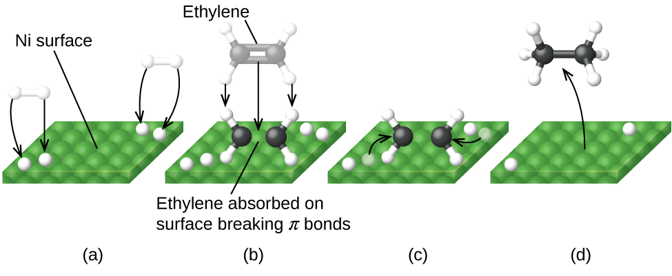

QUÍMICA II
Unidad 4: Cinética Química
Clase 11: Reacciones de primer orden, Ecuación de Arrhenius, Mecanismos y Catálisis
Unidad 4: Cinética Química
Clase 11: Reacciones de primer orden, Ecuación de Arrhenius, Mecanismos y Catálisis
El orden de reacción se determina experimentalmente a partir de la ley de velocidad. Es la suma de los exponentes de las concentraciones en la ecuación de velocidad.
Para una reacción general: $$ aA + bB \rightarrow \text{productos} $$
La ley de velocidad suele tener la forma: $$ \text{velocidad} = k[A]^m[B]^n $$ donde m y n son los órdenes parciales, y el orden total es $m+n$.
Ejercicio: Para la reacción $2NO(g) + 2H_2(g) \rightarrow N_2(g) + 2H_2O(g)$, la ley de velocidad experimental es $v = k[NO]^2[H_2]$. Si se duplica la concentración de $H_2$, ¿cómo cambia la velocidad?
La velocidad es directamente proporcional a $[H_2]^1$, por lo que al duplicar $[H_2]$, la velocidad se duplica.
Una reacción es de primer orden cuando la velocidad es directamente proporcional a la concentración de un único reactivo:
La representación de $\ln[A]$ vs $t$ da una línea recta con pendiente $-k$. La vida media ($t_{1/2}$) de una reacción de primer orden es independiente de la concentración inicial:
La descomposición del dimetil éter a 504 °C es de primer orden:
$$ (CH_3)_2O(g) \rightarrow CH_4(g) + H_2(g) + CO(g) $$Datos de presión parcial del DME en función del tiempo:
| Tiempo (s) | 0 | 390 | 777 | 1195 | 3155 |
|---|---|---|---|---|---|
| Presión DME (mm Hg) | 312 | 264 | 224 | 187 | 78.5 |
Demostrar que es de primer orden: Calcular $\ln P$ vs $t$ y verificar la linealidad.
Para $t=390$: $\ln(264/312) = -k(390) \Rightarrow k = 4.28 \times 10^{-4} \, s^{-1}$
Para $t=777$: $\ln(224/312) = -k(777) \Rightarrow k = 4.26 \times 10^{-4} \, s^{-1}$
Los valores de $k$ son prácticamente constantes, confirmando el orden 1.

Figura 1: Gráfica de $\ln P$ vs tiempo para la descomposición del dimetil éter, mostrando linealidad característica de primer orden.
La constante de velocidad $k$ depende fuertemente de la temperatura. Arrhenius propuso:
Tomando logaritmos naturales:
Para dos temperaturas diferentes:
Ejemplo: La descomposición del HI en fase gaseosa tiene $E_a = 182 \, kJ/mol$. A $700°C$, $k = 1.57 \times 10^{-5} \, M^{-1}s^{-1}$. Calcular $k$ a $800°C$.
$T_1 = 973 \, K$, $T_2 = 1073 \, K$, $E_a = 182000 \, J/mol$.
$\ln\left(\frac{k_2}{1.57 \times 10^{-5}}\right) = \frac{182000}{8.314}\left(\frac{1}{973} - \frac{1}{1073}\right) = 2.09$
$\frac{k_2}{1.57 \times 10^{-5}} = e^{2.09} \approx 8.08 \Rightarrow k_2 = 1.27 \times 10^{-4} \, M^{-1}s^{-1}$
Un mecanismo de reacción describe la secuencia de pasos elementales por los cuales transcurre la reacción global.
Ejemplo: La reacción $NO_2(g) + CO(g) \rightarrow NO(g) + CO_2(g)$ ocurre por debajo de 225°C en dos pasos:
1. $NO_2 + NO_2 \rightarrow NO_3 + NO$ (lenta)
2. $NO_3 + CO \rightarrow NO_2 + CO_2$ (rápida)
El $NO_3$ es un intermediario. La ley de velocidad experimental es $v = k[NO_2]^2$, consistente con el paso lento bimolecular.
Ejercicio: Dado el mecanismo:
$NO_2(g) + F_2(g) \rightarrow NO_2F_2(g)$ (lento)
$NO_2F_2(g) \rightarrow NO_2F(g) + F(g)$ (rápido)
$F(g) + NO_2(g) \rightarrow NO_2F(g)$ (rápido)
¿Cuál es la ley de velocidad y cuáles son los intermediarios?
La etapa lenta es la primera, por lo que la ley de velocidad es $v = k[NO_2][F_2]$. Los intermediarios son $NO_2F_2$ y $F$.
Un catalizador acelera una reacción sin consumirse, proporcionando un mecanismo alternativo con menor energía de activación.
Ejemplo: La hidrogenación del etileno $C_2H_4 + H_2 \rightarrow C_2H_6$ es catalizada por metales finamente divididos. El mecanismo involucra adsorción química, ruptura del enlace H-H y formación de enlaces C-H.

Figura 2: Representación de la adsorción y reacción en superficie de un catalizador heterogéneo.
Haz clic en cada nodo para desplegar u ocultar sus ramas.
Haz clic en la tarjeta para voltearla.
Calcula la constante de velocidad a una nueva temperatura dados $k_1$, $T_1$, $T_2$ y $E_a$.
Calcula la vida media a partir de la constante de velocidad $k$.
Muchos fármacos se degradan siguiendo una cinética de primer orden. La ecuación de Arrhenius se utiliza para predecir la velocidad de degradación a temperatura ambiente a partir de estudios a temperaturas elevadas (estudios de estrés). Esto permite establecer la fecha de caducidad.
Por ejemplo, la hidrólisis de la aspirina en solución es de primer orden; conocer $E_a$ permite ajustar las condiciones de almacenamiento.
Las enzimas son catalizadores biológicos que reducen la energía de activación de reacciones metabólicas. El mecanismo de acción enzimática (ej. modelo de ajuste inducido) es análogo a la catálisis heterogénea, donde el sustrato se adsorbe en el sitio activo y se convierte en producto.
Comprender la cinética enzimática (Michaelis-Menten) es fundamental en farmacología para el diseño de inhibidores.
La oxidación de vitaminas y lípidos en alimentos sigue cinéticas de primer orden. La ecuación de Arrhenius ayuda a determinar la vida útil de productos alimenticios y a optimizar las condiciones de almacenamiento (temperatura, luz, oxígeno).
"Aumentar la temperatura, aumenta la constante"
$$ k = A e^{-E_a/(RT)} $$
Recordar que A es el "factor de frecuencia" (choques efectivos).
"Cero, Uno, Dos: la velocidad sube o no"
"El paso más lento es el que manda"
El orden no se deduce de la ecuación balanceada; debe determinarse experimentalmente.
Las unidades de la constante de velocidad dependen del orden global: para primer orden $s^{-1}$, para segundo orden $M^{-1}s^{-1}$.
La constante $R = 8.314 \, J/(mol\cdot K)$, por lo que $E_a$ debe estar en J/mol.